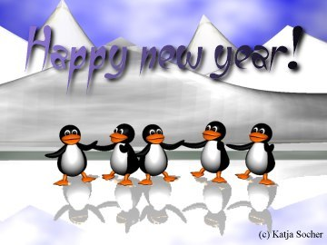

 Un profesor de filosofía esperaba a sus alumnos con varias cosas encima de la mesa. Cuando la clase dio comienzo, tomó una gran jarra de cristal y la llenó con piedras, de unos cinco centímetros de diámetro.
Entonces preguntó a sus alumnos si la jarra estaba llena. Todos estuvieron de acuerdo en que lo estaba. De modo que el profesor tomó una caja de guijarros y la volcó sobre la jarra, sacudiendola ligeramente. Evidentemente, los guijarros se colocaron en los huecos entre las piedras. Entonces preguntó nuevamente a sus alumnos si la jarra estaba llena. Y estuvieron de acuerdo.
Tomó entonces una caja de arena y la vació sobre la jarra. Y la arena rellenó los huecos que quedaban, por supuesto. Y preguntó una vez mas si la jarra estaba llena. Y los estudiantes respondieron de forma unánime que sí.
El profesor sacó entonces de debajo de la mesa dos latas de cerveza, y procedió a vaciarlas completamente en la jarra, completando los escasos huecos que dejaba la arena.
Los estudiantes rieron.
Ahora, dijo el profesor, mientras las risas aún duraban, quiero que os deis cuenta de que esta jarra representa vuestra vida. Las piedras son las cosas importantes, tu familia, tu pareja, tu salud, tus hijos, ... Aquellas cosas que, aunque todo lo demás se perdiera y sólo ellas permanecieran, harían que vuestra vida estuviera llena.
Los guijarros son esas otras cosas que importan, como el trabajo, la casa o el coche. La arena es todo lo demás, las cosas pequeñas. Si ponemos la arena primero en la jarra, continuó, no queda sitio para los guijarros o las piedras. Lo mismo pasa con la vida. Si gastas todo tu tiempo y energía en las cosas pequeñas, nunca tendrás sitio para las cosas que son realmente importantes para tí. Presta atención a las cosas que són críticas para tu felicidad. Juega con tus hijos. Sal con tu pareja a bailar. Siempre habrá tiempo para ir a trabajar, limpiar la casa, invitar a gente a cenar y arreglar desperfectos.
Preocúpate primero de las piedras, las cosas que realmente importan. Fija tus prioridades. Lo demás es sólo arena.
Uno de los estudiantes levantó la mano y preguntó qué representaba la cerveza.
El profesor sonrió. Me alegro de que lo preguntes. Simplemente está para mostrar que no importa como de llena parezca tu vida, siempre habrá sitio para un par de cervezas.
Creo que la misma historia se aplica al diseño de buen software. Primero debes construir el diseño básico y luego puedes añadirle otras cosas. Si piensas primero sobre todas las características y posibilidades entonces se convertirá en un desastre inmantenible.
El sistema operativo Linux es un ejemplo de buen diseño. Esa es una de las razones de su éxito continuado.
También vemos que organizar diseños caóticos es una tarea casi interminable. Ha llevado varios años reestructurar Mozilla, pero ahora es una aplicación bien estructurada y las cosas se están sucediendo de una forma más dinámica, liberándose de forma regular revisiones estables.
Blender (www.blender.org) es ahora también software libre. La imagen de la portada con la famila Tux en el hielo fue realizada con Blender. Sin embargo, se hizo con la vieja versión binaria, y puede llevar un cierto tiempo el reorganizar el código de blender ...
Recuerda esta historia la próxima vez que
comiences un desarrollo de software.
¡Feliz año nuevo !
-- Guido Socher
 Detección de intrusos con Debian GNU/Linux,
por José Salvador González Rivera
Luchando contra la publicidad no deseada (o Spam) en el correo,
por Katja y Guido Socher
Automatizando la administración de sistemas con ssh y scp,
por Erdal Mutlu
Administrando HTML con Perl, HTML::TagReader,
por Guido Socher
Unix Libre: Las especies BSD de Unix,
por Georges Tarbouriech
Programación concurrente - comunicación entre procesos,
por Leonardo Giordani
BASIC programming with Unix,
por John Perr
Demografía práctica,
por Ralf Wieland
Detección de intrusos con Debian GNU/Linux,
por José Salvador González Rivera
Luchando contra la publicidad no deseada (o Spam) en el correo,
por Katja y Guido Socher
Automatizando la administración de sistemas con ssh y scp,
por Erdal Mutlu
Administrando HTML con Perl, HTML::TagReader,
por Guido Socher
Unix Libre: Las especies BSD de Unix,
por Georges Tarbouriech
Programación concurrente - comunicación entre procesos,
por Leonardo Giordani
BASIC programming with Unix,
por John Perr
Demografía práctica,
por Ralf Wieland
Búsquedas sin distinción de mayúsculas y
minúsculas
Cuando abrimos los editores vim o vi, las búsquedas (usando /) son
en general dependientes de la clase de la letra. "string" no es lo mismo
que "String". Para cambiar ese comportamiento, escribimos
:set icTambién puedes colocar el "set ic" de forma permanente en tu fichero ~/.vimrc.
Para buscar en las páginas man de esa forma (cuando las vemos desde la línea de comandos) basta con fijar la variable de entorno PAGER a 'less -i'.
Bash: export PAGER='less -i' Tcsh: setenv PAGER 'less -i'
|
© 2002 LinuxFocus Página de contacto con LinuxFocus |